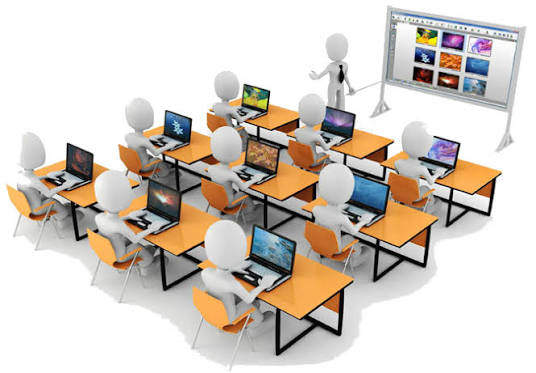

Comunicacíon y ciencias sociales
Se estudia la lengua española, la historia, la geografía y la sociedad. También se aprende a expresarse y comprender textos correctamente.
Estoy aprendiendo a crear páginas web con HTML y CSS.
Se estudia la lengua española, la historia, la geografía y la sociedad. También se aprende a expresarse y comprender textos correctamente.
Se aprende vocabulario, gramática, pronunciación y comprensión oral y escrita para comunicarse en inglés.
Se aprende a utilizar programas como Word, Excel y PowerPoint para crear documentos, hojas de cálculo y presentaciones.
Se estudian matemáticas, física, química y ciencias naturales, aplicando estos conocimientos a problemas de la vida cotidiana.
Se aprende a instalar, configurar y mantener redes informáticas. Se trabaja con ordenadores, routers, cables de red y otros dispositivos, además de aprender a solucionar problemas de conexión y garantizar que los equipos puedan comunicarse entre sí.

Correo: imaa686@g.educaand.es